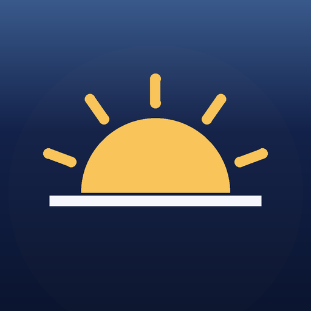
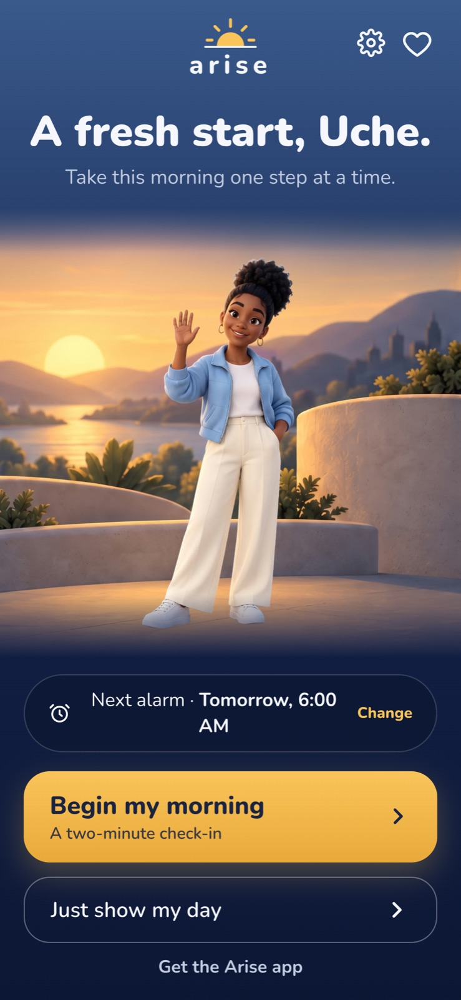
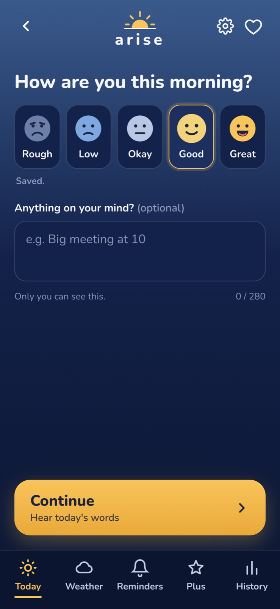
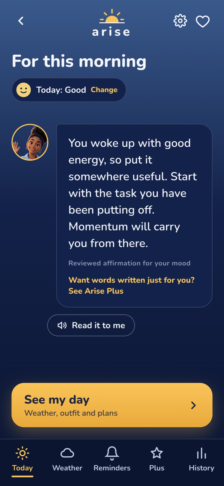
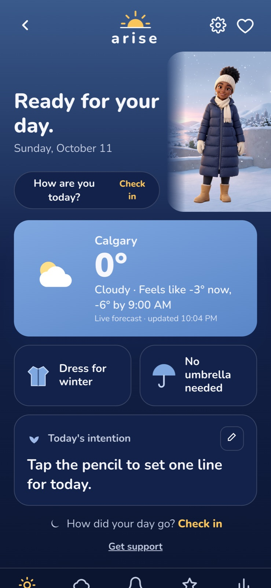
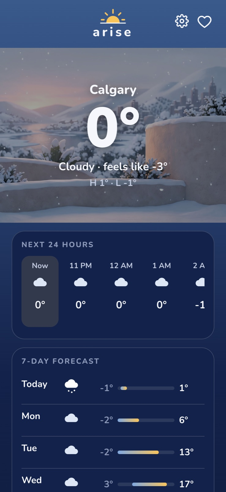
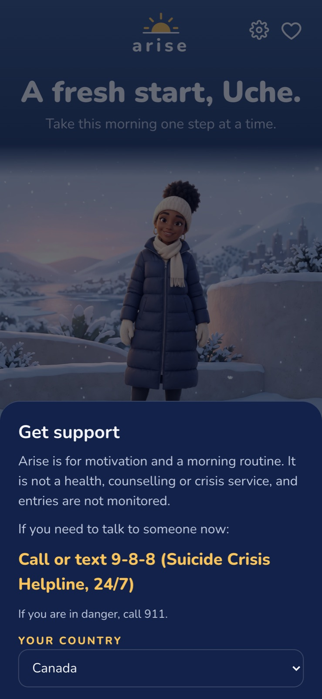
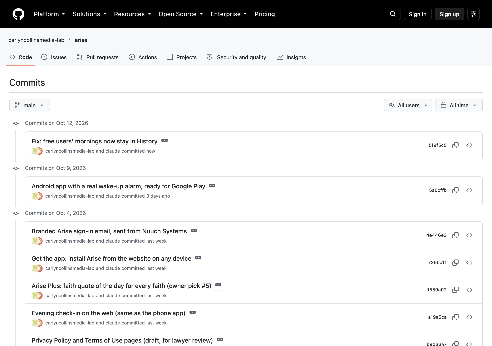
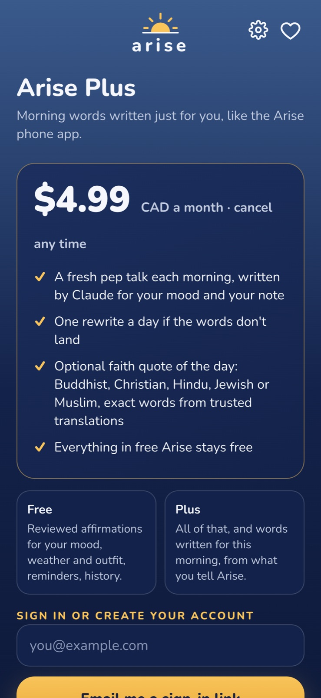

Demo Week
Start the day on purpose, not by accident.
A wake-up alarm with a companion who asks how you feel, gives you words for that mood, and tells you what to wear.
Uche Azuike · Nuuch Systems · Qubators AI Foundry 2.0, Cohort 2 · 12 October 2026
The problem
6:00
You're half awake and reach for the phone.
6:02
News, messages, social media, your to-do list. Nobody chose it.
All day
Stressed, rushed, or wearing the wrong coat in the rain.
Evidence · My survey
13
of 18
wake between 5:00 and 6:30 am. That early window is exactly when Arise rings.
"What time do you usually wake up?" (number of people)
2
5
3
4
2
2
Before 5
5:00
5:30
6:00
6:30–6:45
7 or later
Source: "Your Mornings" survey, 18 responses, 22–27 September 2026. The survey did not mention Arise. Gold bars = 5:00 to 6:00 answers.
Evidence · My survey
"What's on your mind in the first few minutes?"
My to-do list
9
My phone
3
Money
3
Work or school stress
2
How tired I feel
2
→ Arise adds a one-line intention and daytime reminders.
"How do you usually feel when you wake up?"
It depends on the day
7
Calm
4
Energised
3
Groggy
2
Low, stressed
2
→ Arise asks how you feel every single morning.
Source: "Your Mornings" survey, 18 responses. Left question allowed more than one answer.
Evidence · My survey
"Before you leave the house, what do you usually do?"
Pray or meditate
15
Choose an outfit
11
Check messages
11
Music or a podcast
10
Eat breakfast
8
Scroll social media
7
Check the weather
6
What Arise gives them
Outfit + weather → day brief
Live weather, what to wear, and whether to take an umbrella.
Pray or meditate → faith quote
A quote from your own faith each day, in Arise Plus.
11 of 18 tried affirmations
A pep talk for today's mood. 10 of 18 have tried a new alarm app.
Source: "Your Mornings" survey, 18 responses; more than one answer allowed. Gold bars = habits Arise supports directly.
Evidence · Why routines stop
"It got repetitive"
3
Never the same pep talk twice in a row.
"I kept forgetting"
2
You can't forget a routine that wakes you up.
"Lost motivation" or "too much time"
3
One tap for your mood. Typing is optional.
Source: "Your Mornings" survey, 18 responses. On the good side, 8 of 18 said they noticed a difference when a routine stuck.
Solution design
The morning · under two minutes
Even locked or restarted
A face you chose
Five smiley faces
For that mood, read aloud
Weather, outfit, umbrella
The rest of the day
Solution · Real screens
Your companion greets you by name. One tap tells Arise how you feel, and it saves straight away. Then you get words for that mood, with a button to hear them read aloud.

Home. Your companion and your next alarm.

Mood. Five smiley faces, one tap.

Pep talk. Words for that mood.
Screenshots of the live Arise app at phone size, taken 11 October 2026. The Android APK runs the same journey in the live demo.
Solution · Real screens
The day brief turns live weather into plain advice: what to wear and whether you need an umbrella. Help is always one tap away.

Day brief. Dress for winter, no umbrella.

Weather. Next 24 hours and 7 days.

Get support. The help line for your country.
Screenshots of the live Arise app, 11 October 2026, 10:04 pm. Weather from Open-Meteo, live.
Working app · Proof
Phone locked, app closed
Passed
After a restart
Passed
Airplane mode, no network
Passed
Do Not Disturb on
Passed
Passed
Rang on the minute using Android's alarm clock, opened the full-screen alarm with "I'm up" and Snooze, then set itself for the next day.
Source: docs/TECHNICAL-NOTES.md, alarm spike test report, in the GitHub repo. Why first: one survey answer to "a bad morning" was "the alarm didn't ring".
Live demo
1. Set a real alarm for one minute from now
2. Tap my mood and get my pep talk
3. The alarm rings: "I'm up" or Snooze
4. Weather, what to wear, and History
How it's built
Android APK (React Native, Kotlin alarm). iPhone (Apple AlarmKit). Installable web app.
Moods, notes, history and reminders are stored here only.
Sign-in by email link. Whether you pay for Plus. A daily cap of 300 AI calls.
The AI key lives here, never in the app.
Claude writes pep talks. Stripe takes payments. Open-Meteo gives weather. Email from hello@nuuchsystems.com.
Built with Claude Code from my PRD (the product bible). Hosting: Netlify. Code: github.com/carlyncollinsmedia-lab/arise
Proof · Built and tested step by step

Tests with real results
Claude pep talk tested live, 30 Sep: answered in 6.0 and 8.2 seconds
Free pep talk checked 11 Oct: 1.4 seconds
Stripe test payment worked: subscription active until 4 Nov
10 of 10 database tables locked so people see only their own rows
Bug found and fixed 11 Oct while making these slides
Commits by day: 18 Sep 1 · 26 Sep 14 · 30 Sep 20 · 3 Oct 30 · 8 Oct 1 · 11 Oct 1. Test log: docs/integration-test-log.md.
Safety and privacy
Setup says Arise is for motivation. It is not therapy or a crisis service.
Arise skips the pep talk and shows a calm message with a help line. Lines for 15 countries.
Phone numbers come from a checked list, and a note can't change what the AI may say.
Feelings stay on your phone. Privacy policy and terms are written, ready for a lawyer's review.

Business model
Alarm, mood check-in, reviewed pep talks, weather and outfit, reminders, history.
A pep talk written by Claude each morning, one rewrite a day, and a faith quote for your own faith.
Payments run through Stripe in test mode. My test purchase created a real subscription record, active until 4 November.
Cost control: short AI answers, two AI calls per Plus member a day, and a cap of 300 AI calls a day for the whole app.
Roadmap
Phase 1 · Done
Real alarm, signed and ready for Google Play
Passed all 4 tests
Installs on any phone or computer
Payments working in test mode
Phase 2 · Next
12 testers for 14 days, then iPhone, with real payments
Today's devotional for Christian users in Plus. I'll ask Christ Embassy (LoveWorld) for permission; until then, a button opens the official Rhapsody app.
Today's words and weather without opening the app
Phase 3 · Plus grows
The AI speaks your morning words in languages like Igbo, Yoruba, Hausa or French
A real voice greets you, plus more voices and companions
Share today's encouragement with a friend
Later: choose your pep-talk tone (gentle, practical or uplifting) · a calendar-aware day brief · more faiths in the quote library
Questions?
Android APK: github.com/carlyncollinsmedia-lab/arise/releases
Try it on the web: arise-morning.netlify.app
What I learned: the AI builds exactly what you describe, so clear planning is the real work. Test the riskiest part first.
Uche Azuike · Nuuch Systems · hello@nuuchsystems.com